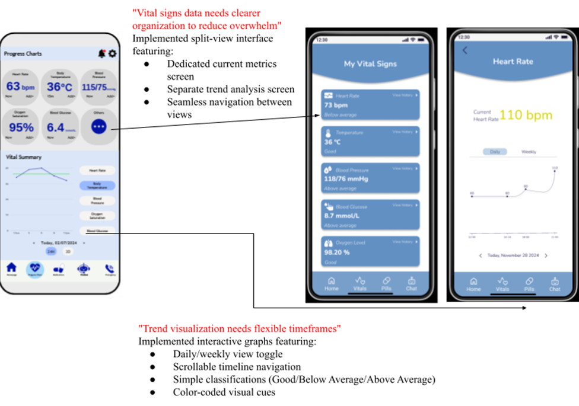
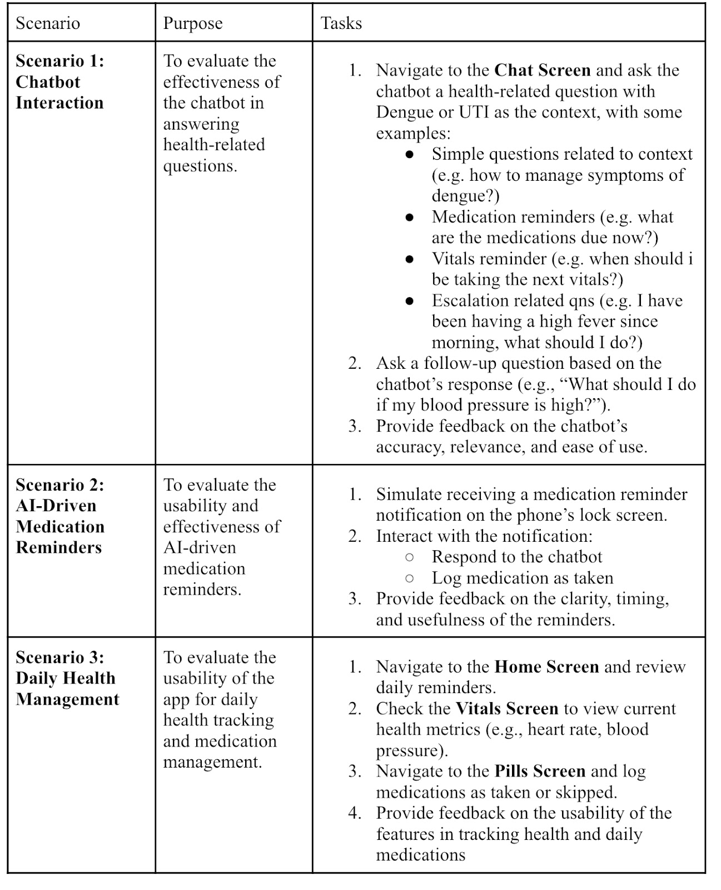
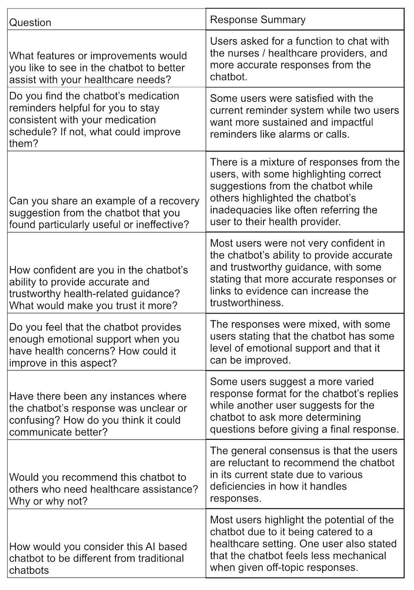

MIC@Home: Leveraging AI for Patient Care at Home to Enable Virtual Ward Operation
Acknowledgements
We would like to express our deepest gratitude to Mr. Keith Tan and Dr. Kate Lee for their unwavering guidance,
insightful feedback, and dedicated support throughout the course of this project. Their expertise, patience, and
valuable advice have been instrumental in shaping the direction of this work, and their encouragement has been a
source of motivation at every stage.
We also extend our sincere appreciation to our project partners from MOHT for their collaboration and
commitment. Their willingness to share their expertise, provide necessary resources, and engage in meaningful
discussions has been invaluable in ensuring the success of this project. Their contributions have played a
crucial role in refining our approach and achieving our objectives.
This project would not have been possible without the collective efforts of all those involved, and we are truly
grateful for their support and dedication.
-Project Team
Table of Contents
List of Tables
List of Figures
Abstract
Mobile Inpatient Care at Home (MIC@Home) is a healthcare model that delivers hospital-level care to patients in
the comfort of their homes through remote monitoring, telehealth consultations, and periodic home visits by
medical professionals. Developed in response to rising hospital overcrowding, this program was conceived to
alleviate pressure on traditional healthcare facilities while providing continuous, coordinated care for
patients with a variety of conditions that require daily, but not urgent care. However, patient experience comes
at a cost when patients are warded at home and do not have 24/7 access to a nurse.
This project, MediHeal, seeks to address the mental burden associated with the absence of a healthcare provider
through an application that helps address patients' queries and helps them to track their MIC@Home related
duties, like a nurse usually would. Thus, MediHeal seeks to function as a 24/7 available nurse assistant for the
patient, helping to fill in the gaps in between the daily nurse visits.
This report focuses on the ideation, planning, prototyping and validation of the different aspects of the
MediHeal application and the integration of these aspects to produce a final product that can ultimately help
patients enrolled in MIC@Home.
1. Introduction
1.1 Current Situation in Singapore
Singapore's healthcare system is confronting escalating pressures stemming from significant demographic and
epidemiological transitions. Current projections indicate that by 2030, 24.1% of the resident population will
be aged 65 years or above, precipitating a substantial increase in demand for both acute medical interventions
and long-term chronic disease management services [1].
According to operational data, public hospital bed occupancy rates persistently exceed 85% [2], surpassing the
internationally recognized optimal threshold of 70-75% for maintaining healthcare service efficiency [3]. This
capacity constraint manifests in several critical operational challenges:
- Extended patient stays, with the average length of hospitalization increasing by 12% between 2019 and 2023 [4]
- Prolonged emergency department wait times, with admission delays lasting an average of thirty minutes longer than baselines prior to the pandemic [5]
- Significant bed blockage, with 15-20% of acute care beds occupied by patients medically cleared for discharge but awaiting appropriate step-down care arrangements [6]
These systemic challenges collectively underscore the imperative for transformative care delivery models that enhance healthcare system capacity while maintaining service quality and patient outcomes.
1.2 Current Measures
1.2.1 Hospital-Based Measures
The Ministry of Health (MOH) plans to add 1,900 new hospital beds by 2026 to address immediate infrastructure constraints [7] . Concurrently, hospitals are adopting dynamic bed management systems to improve patient flow and reduce length-of-stay through standardized discharge protocols. However, physical expansion alone cannot fully address projected demand growth from Singapore's aging population.
1.2.2 Community Care Apartments
Singapore has implemented Community Care Apartments (CCAs) as a transitional care solution, integrating senior housing with basic healthcare services to alleviate pressure on hospital bed capacity. As of 2025, the program has expanded to 1,200 units across five housing estates, demonstrating measurable impact through a 22% reduction in hospital readmissions among residents [8]. However, current capacity meets only an estimated 15% of projected needs, with waiting periods extending six to eight months in high-demand regions [9]. The model's physical infrastructure requirements present inherent scalability limitations in land-constrained Singapore, necessitating complementary virtual care solutions to achieve meaningful system-wide impact.
1.2.3 Mobile Inpatient Care @ Home (MIC@Home)
MIC@Home is an innovative healthcare delivery model developed by MOH to provide hospital-level care in patients' homes. This program represents a fundamental shift in healthcare delivery, combining advanced remote monitoring technologies with in-person clinical care from multidisciplinary medical teams.
The MIC@Home program simultaneously addresses multiple critical healthcare system challenges through its
innovative design. Primarily, it mitigates bed capacity constraints through the establishment of "virtual
wards," having demonstrated the conservation of over 9,000 hospital bed days since program inception in 2022
[10]. Clinically, the model has shown superior patient outcomes, including a 35% reduction in
hospital-acquired infections alongside exceptional patient satisfaction scores of 92%. From a health
economics perspective, the program delivers substantial efficiency gains, providing equivalent care at
20-25% reduced cost per episode relative to conventional hospitalization[11].
This care model holds particular strategic value for Singapore's unique urban context, offering a scalable
healthcare solution unconstrained by physical infrastructure limitations. With current expansion plans
targeting 300 virtual beds, MIC@Home serves dual purposes: as an immediate capacity enhancement measure and
as a pioneering prototype for next-generation healthcare delivery models [12].
2. Problem Framing
2.1 Current Issues of MIC@Home
Without predefined problem statements from MOHT, our research concentrated on identifying operational challenges in the MIC@Home program. Through extensive stakeholder engagement, including in-depth interviews with nursing staff and consultation sessions with the MOHT implementation team, we developed a patient journey map.
From this storyboard, several key areas of inconvenience and inefficiency can be identified in the journeys of patients. These pain points are summarised below in the table and figure.
| Phase of Treatment | Pain Points | Design Opportunities |
|---|---|---|
| Hospital-to-Home Transition |
|
|
| Independent Monitoring |
|
|
| Provider Home Visits |
|
|
| Long-Term Recovery |
|
|
The MIC@Home program reveals inherent tensions between healthcare efficiency and patient-centered care. While intended to streamline post-hospitalization recovery, the current model inadvertently places excessive responsibility on patients without providing adequate support systems. The identified pain points, particularly around technological complexity and care transitions reflect deeper systemic issues in how we operationalize home-based care. Digital solutions present compelling opportunities, but their effectiveness hinges on addressing three critical dimensions:
- Redesigning clinician workflows to accommodate remote monitoring
- Rebuilding patient trust in self-management tools
- Creating meaningful feedback loops between patients and providers
Therefore, there are certainly multiple design opportunities for MIC@Home to be further optimised to increase its outreach, to reach the target of 10% of hospital beds in Singapore.
2.2. How-Might-We Statements
Using these design opportunities, several How-Might-We statements are generated to better frame the problem:
- How might we provide patients with simple, personalized reminders and guides to help them manage medication, monitor vitals and follow daily care routines independently?
- How might we provide patients with instant, personalized health reassurance and smart escalation to healthcare providers when needed?
- How might we create an intuitive vital sign monitoring system that helps patients track their health trends with clarity and confidence, reducing unnecessary anxiety?
2.3. Problem Statement
Patients recovering at home need a supportive way to monitor their health, receive personalized feedback, and stay connected to their healthcare team because they often feel isolated and anxious without clear guidance and real-time insights into their condition. This lack of support diminishes their confidence in the recovery process and hinders their ability to actively engage in their own health journey.
3. Value Proposition
Based on the How-Might-We statements and pain points identified in the user journey maps, essential insights were organized into a value proposition canvas:
The MIC@Home Monitoring System delivers an integrated digital health platform that transforms remote patient care through three key services:
- Smart Communication Platform - Secure messaging and automated alerts connect patients with clinicians in real-time, reducing isolation and enabling timely interventions.
- Intelligent Vital Monitoring - AI-powered trend analysis with intuitive traffic-light displays helps patients understand their health status while flagging critical changes for care teams.
- Personalized Care Engine - An adaptive support system that delivers context-aware medication and measurement reminders, intelligently adjusts notification frequency based on patient preferences and compliance patterns, and provides tailored educational content aligned with each patient's recovery journey.
4. Design Statement
The project aims to develop a comprehensive solution for virtual patient monitoring that facilitates seamless communication between patients and the healthcare team. This will be achieved through a software system featuring modules tailored to meet the specific needs of patients, nurses, and hospital care teams. A key component of this solution is the integration of Large Language Models (LLMs) to power an advanced chatbot feature. This chatbot will enhance patient engagement by addressing secondary-level concerns in the absence of healthcare professionals, providing reminders for medication and vital signs monitoring, and generating concise summaries for nursing staff. This approach is designed to improve care coordination, streamline workflows, and ultimately enhance patient outcomes.
5. Concept Design
5.1 Functional Requirements
| Main Functional Requirements | Features that address functional requirements | Enhanced Features with LLM Integration |
|---|---|---|
| Engaging patients in their recovery journey |
A chatbot that can provide:
|
|
| Handling secondary-level patient concerns |
Well constrained chatbot to handle simple medical queries with appropriate escalation of patient concerns
|
|
| Automated Medication and Vitals Monitoring |
|
|
| Escalation for Emergency Situations | Detection of critical symptoms from chat input or vital sign anomalies. | Chatbot understands symptom escalation (e.g., chest pain + dizziness) and triggers emergency workflow. |
| Patient Summary Generation for Nurses | Convert patient-chat interaction, vitals, and medication data into concise summaries. |
Automatic nurse report generation summarizing:
|
5.2. Design Specifications
6. Concept Generation
6.1 Overall Concept
This project envisions a comprehensive, AI-powered virtual care platform designed to enhance patient recovery, and improve care coordination for MIC@Home patients. At its core is an AI-powered chatbot interface, powered by Large Language Models (LLMs) with Retrieval-Augmented Generation (RAG), enabling responsive, safe, and context-aware communication between patients and the healthcare team.
With the functional requirements, design specifications, and overall concept clearly defined, the virtual
patient care system presents a robust, scalable, and intelligent framework for enhancing patient care at home.
The architecture combines a domain-constrained LLM chatbot with system-prompt-driven behaviour, tailored
reminders, and backend monitoring to ensure high-quality patient engagement and effective clinical oversight.
Each system component has been mapped to specific use cases and healthcare workflows, forming a technical
foundation that is to be translated into a user-facing application, Mediheal.
Like most systems-level applications, this project follows a clear separation of concerns between the frontend
and backend components.
- The frontend serves as the main interface between the user and the application, responsible for delivering the system's core features through an aesthetically pleasing, intuitive, and responsive interface.
- The backend manages the functional and system logic, data processing, and system integrations - including the LLM model, patient database and vitals and medication scheduler engine.
7. Developmental Phases of MediHeal
The development of MediHeal followed a structured approach with clearly defined roles and responsibilities across the team. The project was divided into three key phases - Winter Break, Semester 2 Part 1, and Semester 2 Part 2 - with work distributed among team members based on their expertise.
-
Winter Break Development (Weeks 1-4)
The initial development phase established the foundational architecture of the system. The backend team focused on implementing the conversation-saving architecture and testing integration with the vitals database, while simultaneously finalizing the medical knowledge base for jaundice. Concurrently, the frontend team developed the core chat interface and established API connections to support basic functionality. This phase concluded with initial integration testing between frontend and backend components, along with validation of the medical knowledge base for two additional use cases. -
Semester 2: Core Implementation (Weeks 1-6)
The project entered its intensive development phase during the first half of Semester 2. Key achievements included:
- Implementation of the integrated RAG architecture for enhanced chatbot functionality
- Completion of remaining frontend screens with particular focus on vitals monitoring interfaces
- Full system integration testing to verify seamless data flow between components
- Buffer time allocation to address unforeseen technical challenges
- Initial user acceptance testing to gather early feedback on core features
- Finalizing medical knowledge base for Dengue
-
Semester 2: Refinement and Validation (Weeks 7-12)
The final phase prioritized refinement and system validation:
- Backend and frontend revisions based on user feedback collected during testing
- Comprehensive user acceptance testing with clinical stakeholders
- Final system integration testing to ensure all components worked cohesively
- Preparation and delivery of the final project presentation
- Additional validation of the expanded medical knowledge base to include Urinary Tract Infection (UTI)
Areas of Focus & Responsibilities:
- UI/UX Design & User Research (Deebika)
- Frontend Development (Jun Boon)
- Backend Development & AI Integration (Hasina)
Given the project's broad scope, we adopted a structured approach to prioritize development by categorizing features into must-have and nice-to-have functionalities. This classification ensured we focused first on core components critical for patient care while allowing flexibility for enhancements. The feature list served as our primary reference for sprint planning, with must-have items completed during initial phases before addressing enhancement opportunities.
8. Frontend Prototyping
8.1 Purpose and Objectives
The UI/UX development framework establishes a rigorous methodology for creating optimal healthcare management interfaces through close collaboration between design and engineering disciplines. This process harmonizes aesthetic design principles with technical implementation requirements to deliver solutions that meet three fundamental objectives:
- The framework prioritizes enhanced usability by transforming complex medical data into intuitive visual representations, optimizing navigation pathways between critical functions, and refining interactive elements to maximize patient engagement and comprehension.
- Ensures clinical effectiveness through precise data visualization techniques, implementation of fail-safe alert notification systems, and strict compliance with WCAG 2.1 accessibility standards to accommodate diverse user needs.
- The methodology guarantees technical excellence by achieving consistent performance across all target devices, maintaining sub-500 ms interface response times, and implementing enterprise-grade security protocols for sensitive health data protection.
8.2 Responsibilities and Deliverables
8.3 Overview of Frontend Architecture
The frontend architecture for our application is as follows:
The above illustration is a summary of the frontend architecture of our implementation, with different control flows if the user is authenticated or not. The arrows within the frontend block also display the navigability between screens and components. This is the result of the design specifications outlined in the planning phase as shown below.
In addition to the features mentioned above, there are a number of non-functional requirements specified for the frontend implementation.
With these requirements laid out, the initial design of the UI layout was created for the first iteration of the application in Semester 1.
8.4 First Iteration Prototype
The overall structure of this application is shown in the sitemap below.
The design tools were strategically selected based on each phase's requirements. Canva was used initially for rapid concept visualization and foundational design establishment, leveraging its templated environment for efficient early iterations. For advanced stages, Figma was adopted to handle complex technical demands, offering robust features for creating interactive prototypes, reusable components, and seamless developer handoffs. This progression from low-fidelity exploration to high-fidelity implementation ensured optimal resource use and design fidelity at each development phase. All wireframe iterations (1-3) are archived in Appendix A for comprehensive reference.
8.4.1 Feedback for first iteration
For the initial prototype evaluation, MOHT representatives and experienced MIC@home patients were selected as the target audience. Their feedback was instrumental in assessing whether the proposed MediHeal application aligned with user expectations and operational requirements. The inputs obtained have been systematically documented in the table below, accompanied by actionable recommendations for integration into the next design iteration.
After the first round of UI testing and feedback was received, the first iteration of UI tweaks was designed, with the frontend implementation being sufficiently functional to seek to match the UI layout.
8.5. Second Iteration Prototype
8.5.1 Design Phase
During the design phase for MediHeal's second iteration, a Mood Board was created to systematically evaluate and incorporate proven healthcare app interfaces. The Mood Board served as a critical reference point to balance established best practices with MediHeal's specific user needs.
The color scheme (#6290C3, #F0F7EE, #2F3061) was selected to meet healthcare interface requirements while optimizing usability. The primary blue (#6290C3) balances professionalism and approachability for interactive elements, while the light mint background (#F0F7EE) ensures readability and reduces eye strain. The deep navy (#2F3061) provides authoritative contrast for critical information. This palette adheres to WCAG 2.1 AA accessibility standards, maintains distinction for colorblind users, and aligns with clinical environments by avoiding overstimulating hues—prioritizing both patient comfort and functional clarity.
Preliminary wireframes were constructed to define the structural composition and functional organization of interface elements across all application screens. These schematic representations establish the foundational layout architecture prior to the application of aesthetic treatments or content population, serving as the primary reference for subsequent high-fidelity design implementation.
| Login Page |
|---|
| The MediHeal login interface has undergone targeted refinements to enhance usability while preserving its foundational structure. A secondary "Sign Up" option has been introduced beneath the primary login form to accommodate new users without disrupting the existing authentication workflow. The tagline "MediHeal recovery made simpler!" has been prominently positioned to reinforce brand identity and application purpose. |
| Home Page |
|---|
| The redesigned homepage introduces a streamlined clinical interface prioritizing time-sensitive patient needs. Key modifications include a consolidated task dashboard replacing fragmented notifications, with medication and vital measurement reminders now displayed as chronologically ordered action cards. A reconfigured vitals panel presents last-recorded metrics with clinical status indicators, while integrated nurse visit schedules provide transparent care coordination. Non-essential content has been removed to reduce cognitive load, including the emergency button which was relocated to a more prominent position in the app's navigation hub to prevent accidental activation while maintaining immediate access. The layout employs consistent visual hierarchies and standardized interactive elements to reduce cognitive load, with all modifications validated against healthcare usability benchmarks. |
| Medication/Pills Page |
|---|
| The redesigned medication management system introduces comprehensive structural and functional improvements to optimize patient adherence and usability. A new calendar view has been implemented, enabling patients to toggle between weekly and daily medication schedules, with horizontal scrolling functionality for seamless temporal navigation. The interface now incorporates interactive checkboxes adjacent to each medication entry, allowing users to track dose administration in real-time. These enhancements complement the previously established temporal grouping of medications (Before/After Food categories) and chronological dosage display, while maintaining consistent bottom navigation. The calendar integration provides longitudinal treatment visibility, with visual indicators distinguishing planned, completed, and missed doses. |
| Vitals Page |
|---|
|  |
| The redesigned vital signs monitoring system introduces comprehensive structural and functional improvements to optimize clinical data comprehension and patient engagement. A dual-view interface has been implemented, separating real-time metrics from historical trend analysis to reduce cognitive overload. The trend visualization incorporates a three-tier color-coding system (green/yellow/red) to provide immediate visual indicators of measurement status when accessing graphical data. Continuous monitoring capabilities now record measurements throughout the day and aggregated weekly summaries for longitudinal review. These enhancements complement the existing timeframe flexibility (daily/weekly view toggle) and status classification system (Good/Below Average/Above Average), while maintaining strict adherence to WCAG 2.1 AA accessibility standards for color contrast. |
| Chatbot Page |
|---|
 |
| The redesigned chatbot interface introduces comprehensive improvements to enhance usability and functionality. Key modifications include the implementation of structured prompts to guide users through medical queries, such as condition-specific recovery timelines (e.g., dengue) and measurement instructions (e.g., blood pressure). A personalized greeting ("How are you feeling today?") has been added to foster engagement, while maintaining a warm and approachable tone throughout interactions. New features now allow users to bookmark clinically relevant responses for quick reference and review conversation history, enabling seamless tracking of past discussions. These enhancements are complemented by a streamlined navigation system, ensuring intuitive access to core functionalities. |
8.5.2 Implementation Phase
In the second iteration, the UI layout is also used as a template to create the functioning application. With the novelty of the flutter framework for the group, the UI layout of the application in the flutter project was the focus of this iteration. In particular, we wanted to ensure that the implementation in flutter matched the design created by the designer as closely as is possible within the limits of the flutter framework. Thus, the scope of this iteration does not include the full functionality of components and screens. The result of the implementation phase of the second iteration is the screens shown below.
For the approach towards implementing the screens in flutter from the design templates given, each screen
had varying levels of difficulty in translating design to application.
The landing page, login page, and the signup page are the simplest to implement from the design, given that
they are mostly UI, and that the layout is relatively simple. The vitals page is also relatively simple due
to the above mentioned reasons.
In comparison, the home page is more difficult due to the sheer volume of customised UI components. In
addition, the specification for the design of the reminders is that each reminder UI element has to be able
to be checked and thus be stateful, making it more difficult to scale the screen component to an arbitrary
number of reminders.
The pills page was challenging to implement due to the complexities of managing dates, times, and scheduling
events. To save development time, an open-source Dart calendar package called calendar_view was used because
it closely matched the template designs. However, this choice also imposed restrictions on certain design
elements, such as the day view layout and event presentation.
The chat page was also challenging to implement due to the complexities of dynamically rendering incoming
messages and ensuring scalable design. To address these issues, the open-source package flutter_chat_ui was
utilized to manage the UI layout, allowing the development team to focus on optimizing backend communication
for chat functionality.
8.6 Testing of Iteration 2
With the design and implementation done to an appropriate level, we conducted testing for both the design and implementation aspect of the frontend. This consisted of a focus group discussion with 5 relevant users on the design aspects of the UI, a review and discussion with a UI expert, and a series of frontend implementation functionality tests.
8.6.1 Feedback by UI/UX Specialists
During Iteration 2, a comprehensive UX evaluation was conducted by expert UI/UX professionals from the National University of Singapore—a professor and a graduate-level researcher. They performed a complete heuristic walkthrough of the prototype interface, with all observations and recommendations systematically documented for further analysis. The table below synthesizes their expert assessments and proposed enhancements.

|
|---|
8.6.2 User Testing: Patient Experience SUS Survey
| Introduction |
The System Usability Scale (SUS) is a widely recognized, standardized tool for evaluating the usability
of digital products [14]. It consists of a 10-item questionnaire with a 5-point Likert scale (1 =
Strongly Disagree to 5 = Strongly Agree), designed to measure users' perceptions of a system's
effectiveness, efficiency, and satisfaction.
For the MediHeal App, the SUS was administered to 5 participants (patients and nurses acting on behalf of patients) to assess:
|
| Methodology |
Participant Demographics:
The study included 5 carefully selected participants representing key user groups:
The SUS survey was conducted in a controlled yet realistic testing environment to ensure accurate feedback. Participants interacted with a high-fidelity Figma prototype that faithfully replicated the complete MediHeal App user experience, including:
|
| Result/Findings |
|
| Conclusion |
The SUS evaluation demonstrates that the MediHeal application achieves good overall usability, meeting
established benchmarks for patient-facing health technologies. The assessment confirms the app's
effectiveness in core functionality while identifying specific opportunities for optimization. These
findings support moving forward with implementation while prioritizing the identified improvements.
Complete methodology, scoring details, and raw data are available in Appendix B. |
8.6.3 Frontend Functionality Tests
For this iteration, the scope of the functionality tests cover the functionality of the layout of the
frontend implementation, like the position of the UI elements, scrollability of certain elements, and
interactivity of others.
The testing methodology is as follows:
- Devices: 3 different models of Android devices to be used
- For each device, go through all of the screens
- Note down any issues with navigation
- Note down any issues with UI element functionality
- Note down any issues with smoothness of application
The results are as follows:

|
|---|
From the tests, a major issue can be observed, which is the flexibility of the UI in the implementation to
cater to devices of different screen aspect ratios and resolutions. As padding was necessary to be used to
mimic the UI layout of the design template, Many of the screens, especially the home screen, used padding to
fix the layout to a certain desired position. This is not flexible as smaller screens will experience the
rendering overflow as seen by the 2 Samsung devices tested while screens with bigger width will have the
elements not exactly in the right place. The solution to this issue is to incorporate more flexible forms of
padding that flutter offers as a framework, such as Spacer(), UI layout directives like
Alignment.spaceBetween, and Flexible containers like Expanded().
For the next iteration, these layout considerations will be taken into account and rectified.
8.7 Third Iteration Prototype
Following feedback from Iteration 2, which highlighted areas of the design requiring refinement, Iteration 3
introduced updates inspired by contemporary mobile app interfaces. The primary focus was enhancing visual
hierarchy throughout the prototype, ensuring elements were strategically positioned to reflect their
importance to users.
Additionally, a color contrast checker was integrated to optimize readability. This tool verified that text
and background color combinations met sufficient contrast ratios, improving user comfort and accessibility.
| Homepage |
|---|
|
The interface has been systematically redesigned to optimize information processing and workflow
efficiency. Through careful application of established design principles, textual content, visual
elements, and interactive components have been organized into a clear hierarchy that enhances both
readability and scannability. The implementation of balanced spacing creates distinct visual separation
between sections while maintaining logical relationships between related elements. This includes padding
between major content blocks, spacing between related items, and margins within components. The resulting
layout presents a clean, uncluttered interface that reduces cognitive load while intuitively guiding users
through clinical workflows.
The emergency call functionality has undergone a deliberate redesign based on extensive user research with clinical staff. The button color has been changed from red to green to better align with healthcare professionals' mental models, where green signifies accessible, ready-to-use systems while red is reserved for critical equipment alarms. The redesigned button maintains WCAG AA compliance through appropriate contrast ratios and has been enlarged to touch target to ensure reliable activation, even in high-stress situations. This modification reflects the application's commitment to context-appropriate design decisions grounded in user research. The interface architecture has been refined through application of fundamental UX principles. Fitts's Law has been implemented for critical actions, with enlarged touch targets and strategic positioning in optimal reach zones [15]. Cognitive load has been reduced through simplified appointment cards that display only four essential details: time of appointment, healthcare provider information, consultation type (physical/online), and action options (link/reschedule). The layout follows eye-tracking optimized patterns with left-aligned chronological organization and consistent visual grouping, while unnecessary decorative elements have been removed to maintain focus on critical functionality. The quick actions panel has been redesigned to support efficient one-handed operation. Positioned within the natural thumb-zone, the panel features spaced equally apart to ensure reliable activation while preventing accidental touches. The three core functions (Log Vitals, Add Medication, and Chat with MediBot) are arranged to minimize thumb movement and maximize accessibility. This optimized layout complements the overall information architecture while providing immediate access to frequently used features, demonstrating how evidence-based design principles can enhance usability in critical healthcare environments. The redesign maintains strict accessibility standards while improving operational efficiency for clinical staff. |
| Medication/Pills Page |
|---|
|
The redesigned interface applies Jakob's Law to maintain visual and functional consistency across
application modules [16]. The "Pills Schedule" header now matches the typography and styling of other
major sections, creating a unified visual language. Strategic placement of the date 24px below the header
aligns with the layout conventions used in the Vitals page and Chatbot page. Light grey divider lines (1px
at 20% opacity) between medication entries improve scannability while maintaining a clean aesthetic. These
refinements create a cohesive experience that reduces cognitive load as users navigate between different
application functions.
The system now employs color-coded visual cues to quickly communicate medication instructions. Blue indicators and left-positioned meal icons (→🍽️) denote medications to be taken before food, while green indicators with right-positioned icons (🍽️→) identify after-food medications. Interactive checkboxes provide adequate touch targets in accordance with Fitts's Law, with completed medications automatically displaying grey strikethrough text. This visual treatment enables users to rapidly assess their medication status at a glance, particularly important for patients managing complex regimens. The manual "Add Pill" workflow has been restructured as a step-by-step process adhering to Miller's 7±2 Rule for cognitive load management [17]. The redesigned form presents information in logical groupings: medication selection (with autocomplete functionality), dosage specification (using intuitive +/- buttons), duration setting, food relationship designation, and notification scheduling. Primary ("Done") and secondary ("Cancel") action buttons employ distinct color treatments and meet WCAG 2.1 AA contrast requirements. The progressive disclosure of information fields guides users through the medication entry process while preventing them from feeling overwhelmed. |
| Vitals Page |
|---|
The most critical improvement involves the implementation of a standardized color-coding system for vital
status indicators. Normal ranges are now clearly marked in green, while abnormal or critical values appear
in red, creating immediate visual differentiation that follows universal medical conventions. This color
system is complemented by descriptive text labels ("Normal", "Below/Above Average") to ensure
accessibility for color-blind users. All color choices maintain WCAG 2.1 AA compliance with minimum 4.5:1
contrast ratios against their backgrounds, and have been tested under various lighting conditions common
in clinical environments.
Temporal context has been significantly enhanced through the consistent display of "Last Measured"
timestamps for each vital sign. These timestamps follow a standardized DD/MM/YYYY HH:MM format with clear
AM/PM designation, matching the temporal display conventions used throughout the application. The
timestamps are positioned directly below their respective measurements in a slightly smaller but equally
legible font size, creating a clear visual hierarchy between the current value and its recording time.
A "+ Add Vitals" button has been introduced, enabling users to manually log measurements. The input screen
follows a design pattern similar to the medication entry interface, ensuring familiarity and reducing
cognitive load. While not visually depicted here, this screen includes:
|
|
The implementation of stacked vertical bar charts adheres to ISO 9241-210 guidelines for ergonomic
human-system interaction, which recommends graphical representations for trend analysis to reduce
cognitive load [18]. This approach is further supported by Nielsen Norman Group research on dashboard
design, which validates stacked bars as effective for comparing multiple values while maintaining
individual data clarity. The dual-axis design presents absolute values alongside qualitative status
indicators, with a color-coding scheme (blue for normal ranges, red for critical values) that aligns with
clinical conventions. Horizontal reference lines have been added to contextualize measurements against
both personalized baselines and standard health ranges.
The time-scale toggle has been relocated to the bottom-middle, optimized as an interactive element with clear visual distinction between active ("Daily") and inactive ("Weekly") states, improving accessibility and selection speed. The bottom navigation bar remains consistent with the broader app for intuitive navigation. Medical terminology (e.g., "Elevated," "Hypertensive") has been standardized to match clinical guidelines. The interface maintains visual harmony with other app modules through unified colors, typography, and time formatting (24hr/AM-PM). These changes ensure the vital trends page is intuitive, accessible, and clinically relevant, supporting faster decision-making while maintaining regulatory compliance. Future iterations may include pinch-to-zoom for detailed analysis and export options for care team collaboration. |
| Chatbot Page |
|---|
|
The chatbot interface has been refined to enhance usability while maintaining its core functionality, with
several thoughtful modifications implemented to improve the user experience. The most notable change is
the rebranding from a generic "Chat" label to "MediHeal Chat", which better communicates the
healthcare-specific purpose of the feature and aligns with the app's medical identity. Upon opening the
chat, users now encounter a friendly robot icon, intentionally designed to foster emotional connectivity
while maintaining professionalism. This visual element serves dual purposes: it provides immediate system
feedback and creates a more approachable digital assistant persona, which is particularly valuable in
healthcare contexts where users may experience anxiety.
Key functional improvements include the addition of bookmark toggle bubbles positioned in the middle corner of each chatbot response. These 24x24px interactive elements allow users to flag and easily retrieve important medical information, addressing a critical need in healthcare communication where users often need to reference previous advice. The bookmark design follows Material Design 3's interactive component guidelines, ensuring visual consistency with modern UI patterns while maintaining sufficient touch target sizes [19]. Furthermore, timestamps have been incorporated for all messages, providing temporal context to conversations while using subtle, low-contrast styling that prevents visual clutter but remains legible. The redesign maintains strict adherence to accessibility standards, including WCAG 2.1 AA compliance for color contrast and text readability. The color scheme and navigation positioning remain consistent with other app modules, ensuring a cohesive user experience across features. |
The notifications for vitals, medications, and chatbot check-ins will follow a consistent and structured format, as illustrated in the provided example below.
The implementation for this iteration seeks to implement the UI changes from the design phase, as well as to fix the UI bugs discovered from the tests done in the previous phase. In addition, the full implementation of two crucial functions of the app is a target. These are the chatbot integration with the backend, and the frontend flow involving push notifications from the backend. All new and modified screens are shown below.
Of the design changes, the vitals summary and the chatbot title and background changes were simple enough to
implement while following the design template of iteration 3's design phase. The more significant changes
implemented were towards functionality of key features of the application.
In the case of the chat page, user inputs will be recorded and rendered in the UI interface as user messages,
while the application sends a http request to the backend with the user input to invoke a response. The
application awaits the response, and then renders them in the UI interface as messages from the chatbot.
Enabling push notifications required backend support and Firebase integration. The process begins with
Firebase assigning a unique device registration token. Once the user grants permission, this token is sent to
the backend along with their ID. The backend scheduler then sends reminder notifications containing a title,
description, and a prompt statement as a payload. These notifications go through Firebase, which delivers them
to the user's device. When the user taps the notification, the app navigates to the chat page via its global
navigator. Simultaneously, the notification message is added to a message stream. The chatbot listens to this
stream, retrieves the most recent message, extracts the prompt, and sends it to the backend. The chatbot then
responds, prompting the user for input.
With the implementation of the main chatbot functions and push notification workflow, the application is ready
for integration testing and user testing.
8.8 Testing of Iteration 3
8.8.1 User Testing: Patient Experience SUS Survey (Round 2)
8.8.2 Integrated Testing
This suite of tests are designed to test the integration between the frontend and the backend, specifically
assessing the functionality of the frontend outcomes.
Two workflows are to be tested:
- The chatbot query and response workflow
- The push notification workflow
Test Suite:
From the tests conducted, a few implementation-specific issues are raised.
The first is the high chatbot latency after 3 consecutive responses, which has been discovered to be a
backend issue and is discussed in the backend testing section. Since this is primarily a backend issue, it
is out of scope of the frontend to address it.
Next is a bug in the notification data flow causing there not to be a chatbot response registered even
though the application opens to the chat page. After much investigation, the issue was discovered to be due
to duplicate instances of the plugin object used to handle the notification in flutter,
FlutterLocalNotificationsPlugin, leading to the notification not being streamed to the chat page. The simple
remedy for this is to use the same global instance of FlutterLocalNotificationsPlugin to handle function
calls.
Lastly, the bug in foreground notifications was investigated to be caused by the function calls to retrieve
the message and get a response being in the inappropriate listening function. Specifically, the function
calls were in initState(), which is a widget function that is only called when the chat page is first
loaded. To remedy this, instead of using initState(), didChangeDependencies(), which is called every time
the message stream is changed, should be used instead.
9. Backend Prototyping
9.1. Purpose and Objectives
The backend of the system is designed to support a patient-centric home recovery platform, integrating an AI-powered chatbot for patient interactions and real-time reporting of medication adherence and vital signs. It provides a structured, scalable and secure infrastructure for seamless data management and communication between patients and healthcare providers. By leveraging structured data management, AI-driven conversational interactions, and automated notifications, the backend aims to bridge the gap between remote patients and healthcare providers. The key objectives include enabling efficient storage and retrieval of patient records, ensuring fast and contextually relevant chatbot responses, automating reminders for medication and vitals monitoring and maintaining data security and privacy through localized AI processing. Ultimately, the system seeks to optimize patient recovery outcomes while reducing the burden on healthcare facilities through proactive monitoring and intervention.
9.2. Responsibilities and Deliverables
9.3. Overview of Backend Architecture
The backend architecture for our application is as follows:
The illustration above summarizes the backend architecture of our implementation, designed to support the
necessary functions of the front end. The architecture ensures seamless interaction between the patient-facing
interface, AI chatbot resources and backend data management components. The flow of information is represented
through directional arrows, illustrating how data moves between the front-end interface, AI-driven chatbot
processing, and hospital monitoring systems. Additionally, to facilitate real-time monitoring and proactive
patient care, the backend integrates structured data management and automated notifications. A detailed
explanation of the information flow is provided in Appendix C.
Following the planning phase, the design specifications taken into considerations for the backend development
are as follows:
A. Functional Requirements
The following define the system’s core functionalities necessary for patient data management, chatbot
interaction and user engagement.
B. Non-Functional Requirements
C. Endpoints
The backend provides a set of endpoints to support key functionalities within the system, enabling smooth communication between the front end, AI chatbot and data storage components. The following table outlines the available API endpoints, their functions, inputs, responses and HTTP methods used.
9.4. First Iteration Prototype
9.4.1. Chatbot Architecture
The chatbot in this project is implemented using LangGraph, leveraging a graph-based architecture to manage conversation flow dynamically. This approach allows for flexible decision-making, ensuring the chatbot can efficiently retrieve relevant information while maintaining a structured dialogue with the user. The figure below shows the set up of the chatbot architecture.
The conversation flow is structured around interconnected nodes, each serving a specific function:
- Start Node: Initiates the interaction and transfers control to the Chatbot Node.
- Chatbot Node: The central hub responsible for analyzing user input and determining the appropriate course of action.
-
RAG tools Node: Houses specialized tools to enhance response accuracy, with the following tools:
- Semantic Search Tool: Retrieves relevant information on specific medical conditions (e.g., jaundice, dengue, UTI) from a structured knowledge base.
- Internet Search Tool: Engages an external search function for broader information retrieval when necessary.
- Schedule Tool: Queries the user's medication timing and vital sign monitoring schedules stored in the database.
- End Node: Marks the completion of the interaction if no further actions are required.
When the RAG Tools Node is activated, it performs its designated function and returns control to the Chatbot Node, which integrates the acquired information into its response. This structured, cyclical process allows the chatbot to efficiently utilize external tools while maintaining conversation flow, resulting in more intelligent and context-aware interactions.
9.4.2. Personalized Response Generation with Modifiable System Prompts
The chatbot node serves as a critical juncture in the system, where a system prompt is utilized to guide the Language Model's (LLM) responses. This prompt defines the LLM's role and provides it with the essential protocol required to address user queries effectively. The system prompt is designed with a standardized template as its foundation. This template ensures consistency in the chatbot's basic functionality across all interactions. However, to provide personalized and contextually relevant responses, the system prompt template is augmented with user-specific information. This additional data includes:
- The user's individualized care plan
- Current procedural guidelines as determined by healthcare professionals (doctors or nurses)
- The context derived from previous interactions with the user
By appending this user-specific information to the standard template, the system creates a tailored prompt for each interaction. This approach enables the chatbot to generate responses that are not only aligned with its general role but also highly relevant to the individual user's medical context and history as well as within the guidelines set by the healthcare professionals.
9.4.3. Structured Patient Database and AI-Driven Data Extraction
A structured MySQL database is implemented to securely store and manage patient data, ensuring seamless integration with the hospital dashboard. The database consists of five main tables, each designed to support key functionalities such as patient monitoring, medication adherence, and chatbot interaction logging. The tables include:
- Patient Information Table – Stores patient information needed for sign up or log in for the frontend.
- Medication Schedule Table – Maintains prescribed medications, including name, dosage, and timing.
- Vitals Schedule Table – Logs the required vital sign monitoring schedule for each patient.
- Tracker Table – Generates a daily schedule based on medication and vital sign requirements, used for push notification alerts.
- Chat History Table – Captures patient-chatbot interactions, enabling review by healthcare professionals.
AI Integrations A. AI-Driven Extraction of Medication and Vitals from Care Plans When a patient care plan is provided, the system utilizes AI-based extraction to identify and store key details such as:
- Medication/ vital name
- Dosage
- Timing
- Required vital signs monitoring
This extracted information is stored in the database and linked to the tracker table, which generates a daily schedule for the patient. The system then queries this schedule to send automated push notifications via Firebase, reminding users when medications or vitals checks are due. An example of the prompt template for the AI extraction and output is shown in the figure below.
B. AI-Generated Summaries for Medication and Vitals Reporting
Following medication intake or vital sign recording, patients can report their status directly via the
chatbot. The AI system continuously extracts these updates and compiles summarized reports, which are then
transmitted to the hospital dashboard. This enables healthcare professionals to:
- Monitor medication adherence trends.
- Track vital sign fluctuations over time.
- Identify potential health risks and intervene when necessary.
By leveraging AI-driven data extraction and structured database management, the system ensures real-time patient monitoring and proactive healthcare intervention, improving patient outcomes and adherence to treatment plans.
9.5. Backend testing for iteration 1
Since the frontend was still under development, the initial phase of testing focused on evaluating the
chatbot's response accuracy and retrieval process within the Retrieval-Augmented Generation (RAG) framework.
The primary goal was to assess whether the chatbot could effectively handle frequently asked questions (FAQs)
related to a given disease type, ensuring that responses were both relevant and medically appropriate.
For this test, the user’s care plan context was set to dengue. However, the chatbot’s retrieval tools included
multiple vector search tools trained on different medical conditions, such as jaundice, dengue and urinary
tract infections (UTI). This setup allowed us to test whether the Language Model (LLM) and chatbot node could
correctly invoke only the vector search tool relevant to the user's specified context rather than retrieving
unrelated information.
To conduct the evaluation, a set of common dengue-related queries was compiled by consulting individuals who
had previously experienced the illness as well as nursing students. These queries were then submitted to the
backend chatbot endpoint using Postman (Figure 27), simulating real user interactions. The chatbot’s responses
were collected and analyzed based on:
- Medical Relevance – Whether the response aligned with established medical guidelines and the user’s care plan.
- Retrieval Efficiency – Whether the chatbot invoked the appropriate semantic search tool, schedule retrieval tool, or internet search tool based on the query.
Additionally, the tool invocation logs were traced in the terminal (Figure 28) to determine whether the chatbot correctly selected the appropriate vector search tool based on the user’s condition. This step was crucial in verifying that the LLM-based decision-making process effectively filtered information specific to the user's medical context.
The initial testing provided critical insights into preliminary chatbot response and the usage of tools given the background context of the user. It also provided insights into the chatbot’s retrieval accuracy and tool selection process. For the next stage of assessment, we consolidated the responses from the chatbot to assess the chatbot accuracy and user friendliness. Below are the chatbot responses and the assessment we conducted (figure 29).
During testing, a key issue identified was the chatbot's tendency to explicitly mention the sources of its retrieved information, such as referencing the tools used or directly stating that the response was derived from the care plan. While this approach provides transparency, it was found to be less user-friendly and detracted from a natural conversational experience. Users may not need to know the technical details of how responses are generated, instead, they expect clear and human-like interactions that provide relevant information without unnecessary system references.
9.6. Second Iteration
While the initial LangGraph architecture successfully retrieved accurate information for a single disease
state given a single care plan, it needed to be enhanced to accommodate multiple users with other medical
conditions, each with a unique care plan and personal medical history. Additionally, the chatbot's responses
required improved user friendliness response to ensure better engagement and clarity for patients.
To address these challenges, we introduced two key modifications to the LangGraph architecture:
-
Retrieval Node for User-Specific Information
A Retrieval Node was added before the chatbot node to ensure that each chatbot interaction is personalized. This node is responsible for retrieving:
- The user’s care plan, including prescribed medications and vital monitoring schedules.
- Previous interactions with the chatbot to provide contextual continuity.
- Current medication and vitals schedule for the day, ensuring accurate reminders and health tracking.
By integrating this user-specific retrieval step, the chatbot can tailor responses based on individual health conditions while maintaining modularity to accommodate multiple users.
-
Supervisor Node for User Friendly Responses
To enhance the clarity, coherence, and user-friendliness of chatbot interactions, a Supervisor Node was integrated into the system. This node evaluates and refines the chatbot's responses before they are delivered to the user, ensuring that the output is both medically relevant and easy to understand.
The Supervisor Node is responsible for:- Ensuring clarity and structure – Responses are formatted in a conversational and easily comprehensible manner, avoiding overly technical language.
- Maintaining medical accuracy – All recommendations align with the user’s individualized care plan and the procedural guidelines set by healthcare professionals.
- Enhancing engagement and empathy – The chatbot consistently communicates in a compassionate and supportive tone, fostering better patient interaction.
By implementing the Supervisor Node, the chatbot now delivers well-structured and user-friendly responses, enhancing patient engagement while maintaining medical accuracy and consistency in interactions. The figure below shows the revised architecture of the chatbot.
9.7. Backend testing for iteration 2
To evaluate the backend's ability to accommodate multiple concurrent users, we conducted a load test by
sending 10 HTTP requests to the server. The test aimed to measure response time and system scalability under
increased demand. The results indicated an average response time of 67,797.36 ms ( 67.8 s or 1.13 min).
Notably, after processing the third request, the response time experienced a significant delay, highlighting a
potential latency issue in the backend system.
Upon further investigation, we identified the primary cause of latency as the waiting time for the backend to
send requests to the Groq API. This delay was likely due to rate limitations associated with the free-tier
version of Groq, which we were using for initial testing.
A function call analysis was performed to trace execution times and identify performance bottlenecks. The key observations from the test were:
- High Latency Due to API Requests: The primary cause of delay was identified as the waiting time for the backend to send requests to the Groq API. The system experienced prolonged delays in response time, which could be attributed to the rate limitations associated with the free-tier version of Groq, which was used for initial testing.
- Excessive Wait Time (time.sleep): A significant portion of execution time (35.002 seconds) was consumed by the time.sleep function, which may indicate an inefficient waiting mechanism within the chatbot’s process.
- Network Latency and SSL Handshake: The Secure Socket Layer (SSL) handshake and read operations accounted for additional delays (1.77 seconds), suggesting that network latency contributed to slow response times.
To mitigate this issue and ensure faster response times, we concluded that moving to a locally hosted LLM would be a more reliable approach when deploying to a real world context. This requires:
- Deploying a locally hosted LLM to reduce dependence on external API calls. Perhaps the use of quantized LLMs can be explored for faster real-time interactions.
- Ensuring the local machine has sufficient computational resources, including high-performance GPU drivers capable of handling large-scale model inference.
- Optimizing request handling by improving parallel processing and reducing unnecessary network latency.
10. Integrated User Tests
10.1 Test Methodology
10.1.1 Test Objectives
The main objective of these user tests is to understand how users interact with the app, identify areas for improvement, and ensure the app meets user needs effectively. Specifically, we seek to answer 6 questions regarding the users' experience with our application.
- Is the app easy to navigate, and are key features accessible?
- Are users able to log medications and track vital signs without confusion?
- Do users find the chatbot helpful for answering health-related questions?
- Are there any features or information missing that users would find useful?
- How intuitive are the medication reminders and notifications?
- Are users able to view and interpret historical health data easily?
10.1.2 Test Environment
The tests are conducted both online and in-person in a semi-guided fashion, with directed scenarios laid out
as well as an exploratory testing phase. For the online tests, the application is loaded onto an emulator on
the host's device and the testers direct the host to interact with the application. For in-person tests, a
provided mobile device has the application loaded onto it for the testers to interact with.
Participants are first made known of the context of MIC@Home. Then, they are given a short introduction to
the MediHeal application and its features. They will run through a set of scenarios assuming the role of a
certain demographic as specified in our use cases, then they will be free to conduct exploratory testing on
the application.
10.1.3 Test Participants
A total of six participants were recruited to be involved in two sessions of user tests, three in-person and three online. The participants are fluent in English and have previously had experience as a patient in the hospital.
10.1.4 Test Scenarios
|  |
|---|
10.1.5 Data Collection
Data collection is done via a questionnaire, which has three sections of questions with the Likert scale as answers. These three sections are overall chatbot satisfaction, chatbot functionality, and application UI/UX satisfaction. After the three sections is a section for open ended questions.The full questionnaire is in Appendix D.
10.2 Test Results
10.2.1 Result Summary
|  |
|---|
10.2.2 Key Takeaways and Conclusion
From this round of user tests, three major issues can be highlighted.
- The accuracy and reliability of suggestions given by the chatbot
- The ability of the chatbot to properly resolve issues raised by the user
- The humanisation of the chatbot's responses
- The ability of reminders to alert the user
Most of these issues stem from the chatbot. In particular, these are issues with the size of the knowledge
base and with the system prompt in the backend. These necessitate the expansion of our current knowledge
base and fine tuning of the system prompt to introduce more variation in sentence structure and to encourage
resolution of a patient's issues over referring the patient to their health provider. The ability for the
chatbot to give useful suggestions is integral to the functioning of the chatbot, and thus the system prompt
modification will be worked on for the final prototype.
On the frontend, the current notifications system is deemed by some users not to be sustained and impactful
enough. This can be improved with an opt-in calling or alarm system that can better incentivise these
patients to conduct their daily routine tasks. The chatbot interface can also be overhauled to allow the
display of links from relevant websites to assure patients that the chatbot's information comes from
reliable sources. These issues are less critical to the function of the application, and so the priority for
the resolution of these issues is medium to low and can be slated for future works.
References
- Singapore's public hospital bed crunch: Are radical solutions needed? (2023, November 26). CNA. Retrieved November 11, 2024, from https://www.channelnewsasia.com/cna-insider/singapore-public-hospital-bed-crunch-waiting-time-radical-solutions-3943586
- DELIVERING CARE BEYOND HOSPITALS. (2024, March 6). Ministry of Health. Retrieved November 4, 2024, from https://www.moh.gov.sg/newsroom/delivering-care-beyond-hospitals
- Kaur, G. (2024, June 14). Top 34 JavaScript Stats You Must Know in 2024 to Level Up Your Business. BigOhTech. Retrieved November 3, 2024, from https://bigohtech.com/top-javascript-statistics/
- Nowak, M. (n.d.). Flutter vs. React Native in 2024 — Detailed Analysis. Nomtek. Retrieved November 7, 2024, from https://www.nomtek.com/blog/flutter-vs-react-native
- The 5 Best Backend Development Languages to Master (2024). (n.d.). Developer Roadmaps. Retrieved November 11, 2024, from https://roadmap.sh/backend/languages
- LLM Leaderboard 2024. (n.d.). Vellum AI. Retrieved November 16, 2024, from https://www.vellum.ai/llm-leaderboard
- Document Database - NoSQL. (n.d.). MongoDB. Retrieved November 16, 2024, from https://www.mongodb.com/resources/basics/databases/document-databases
- What is a Vector Database & How Does it Work? Use Cases + Examples. (2023, May 3). Pinecone. Retrieved November 16, 2024, from https://www.pinecone.io/learn/vector-database/
Appendix
Appendix 1: Meeting with MOHT
This screenshot was taken with permission from the MOHT team during our discussion, where we identified
potential areas with unmet needs and gaps where we could integrate artificial intelligence to improve the
MIC@Home program.
Appendix 2: User Journey Maps
This section presents user journey maps for both patients and nurses, highlighting pain points and design
opportunities to help define the problem statement. A storyboard was also created based on our understanding
and has been verified with the MOHT team.
Appendix 3: List of Features (Patient Module)
There are three main features in the patient module. Namely, care plan to routine reminders, personalized
health report and AI-powered chatbot.
-
Feature 1- Care plan to routine reminders
A care plan is a personalized document that outlines the specific health needs of individuals receiving care. It acts as a roadmap for healthcare providers, detailing the necessary interventions and strategies tailored to each patient's unique medical needs. Developed through comprehensive assessments by a doctor, care plans are regularly reviewed and updated to adapt to the changing needs of the patient. They encompass essential information on medical management, vital signs monitoring and patient allergies ensuring a coordinated and effective approach to patient care.
Patients are able to get the routine reminders in the following ways:
- Push notification
- In app homepage notification section
- During casual interaction with the AI-powered chatbot
With the care plan, patient information and medical history provided by the hospital team, we can extract key essential entities, including vital signs to be monitored and the specific times for monitoring. Additionally, we will capture details such as the names of medications, their dosages, and administration schedules, along with the patient's specific medical conditions. This information will be systematically stored in a patient information database in the backend. This information will firstly, be used to display or send push notification to patients when the medication or vitals has to be recorded. Secondly, the information can facilitate efficient access and management of patient data when interfacing with the Large Language Model (LLM) through Groq API to send reminders to patients through the chatbot feature.
-
Feature 2 - Personalized health report from vitals reported.
The personalized health report feature enables the generation of comprehensive medical health reports based on the vital signs submitted by patients. As patients log their vitals, such as blood pressure, heart rate, temperature, SpO2 and blood glucose level, the system compiles this data into a user-friendly format that highlights trends and deviations from normal ranges. This report can be generated from the vitals recorded within the day to across a few days. This provides patients with insights into their health status. Regularly updated health reports foster proactive management of chronic conditions and encourage patient engagement in their own care.
-
Feature 3 - AI powered Chatbot
The AI-powered chatbot is designed using Retrieval-Augmented Generation (RAG) techniques to ensure responses are accurate and relevant based on a curated knowledge base. This chatbot serves as an interactive support tool for patients, addressing common inquiries related to their recovery journey and providing guidance on managing their health effectively. By offering immediate assistance for secondary-level concerns, the chatbot enhances patient engagement and satisfaction. Additionally, it can facilitate routine check-ins, remind patients of upcoming appointments, and generate concise summaries for nursing staff, thereby streamlining communication within the healthcare team.
-
Feature 4 - Concise summary generation
While the chatbot is equipped to handle patient queries effectively, it is essential that the medical advice provided by the chatbot is communicated to the nurses. This ensures that nurses are informed about the concerns and inquiries raised by patients, even in the absence of a medical professional. To address this need, we propose a feature that delivers a concise summary to nurses regarding the queries resolved by the chatbot, as well as any outstanding questions that remain unresolved. This functionality will enable nurses to better understand their patients' concerns and provide more informed care.
-
Feature 5- Easy documentation
Recognizing that patients' homes may not provide an ideal environment for nurses to set up personal devices for documentation, we aim to alleviate this challenge by implementing a speech-to-text input with transcription functionality. This feature will enable nurses to efficiently perform documentation updates during patient visits, allowing them to focus more on patient care rather than the constraints of their documentation process. By streamlining the documentation workflow in this manner, we enhance the overall efficiency and effectiveness of home healthcare delivery.